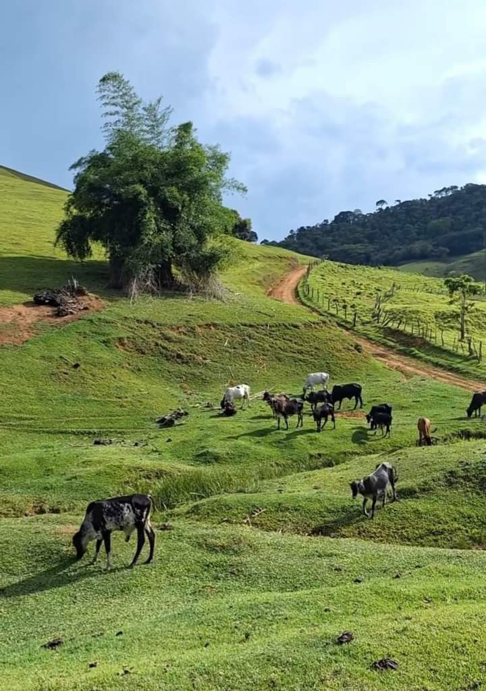

Región Centro-Oeste de Brasil

La región Centro-Oeste es la menos poblada de Brasil, a pesar de su gran extensión territorial. Su economía se basa principalmente en la agricultura y la ganadería.
Entre los productos agricolas más importantes se encuentran soja, algodón, caña de azúcar y maíz.
La región también alberga a Brasilia, la capital de Brasil, una ciudad planificada que fue establecida en 1960 y es actualmente la tercera ciudad más grande del país.
Aunque el Centro-Oeste no tiene salida al mar, cuenta con importantes ríos y cuencas hidrográficas. Además, es el hogar del Pantanal. el humedal tropical más grande del mundo
y la mayor área de pastizales inundados del planeta.
Un aspecto cultural fuerte de esta región es la música
Sertaneja
,
un estilo de música country brasileña, que es el género musical más reproducido en las radios del país.
Estados de la región Centro-Oeste
| Estados |
Capitales |
| Goiás |
Goiania |
| Mato Grosso |
Cuiabá |
| Mato Grosso do Sul |
Campo Grande |
| Distrito Federal (Federal District) |
Brasilia |
Datos de la región Centro-Oeste
| Área |
1,612,000km² |
| Población |
16,504,303 |
| Ciudad más grande |
Brasilia |
| Clima |
Tropical; equatorial |
| Bioma |
Cerrado (la savanna-like biome); Tropical wetland |
| Economia principal |
Livestock, agriculture, extractivism |
| Comida tradicional |
Arroz com Pequi, Caldo de Piranha, Mojica de Pintado, Pamonha |